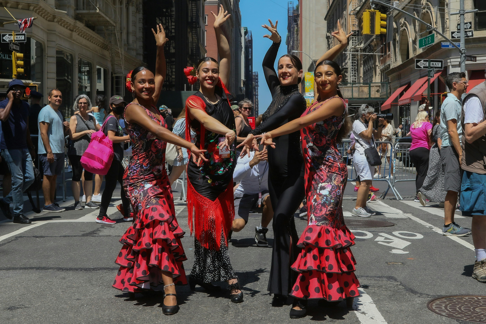
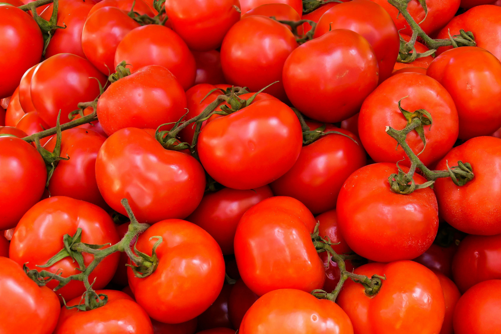
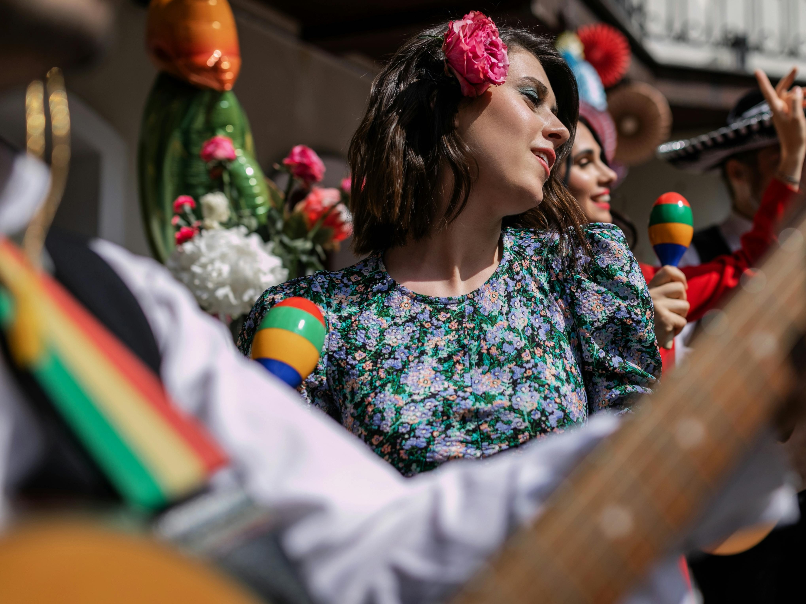
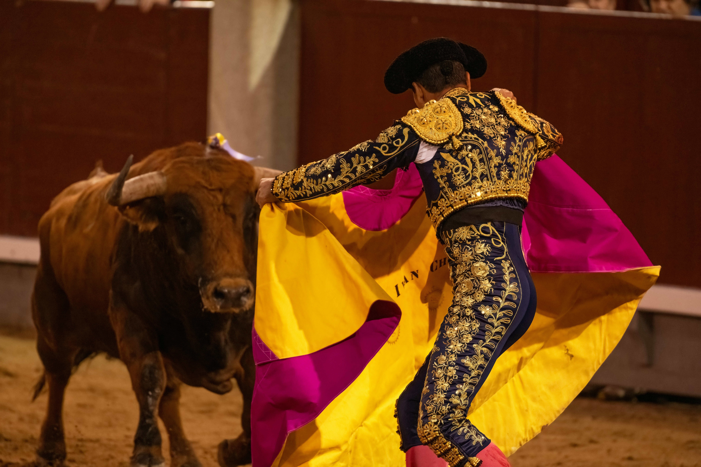
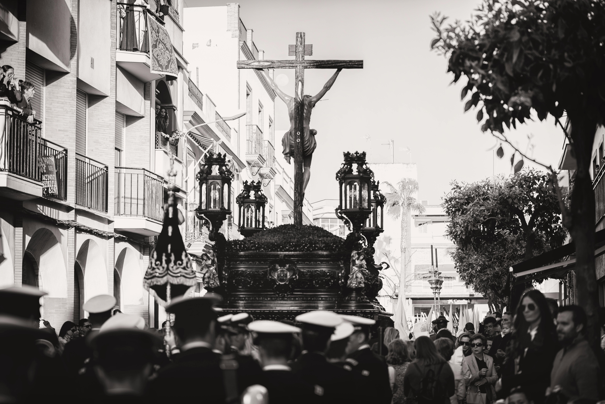
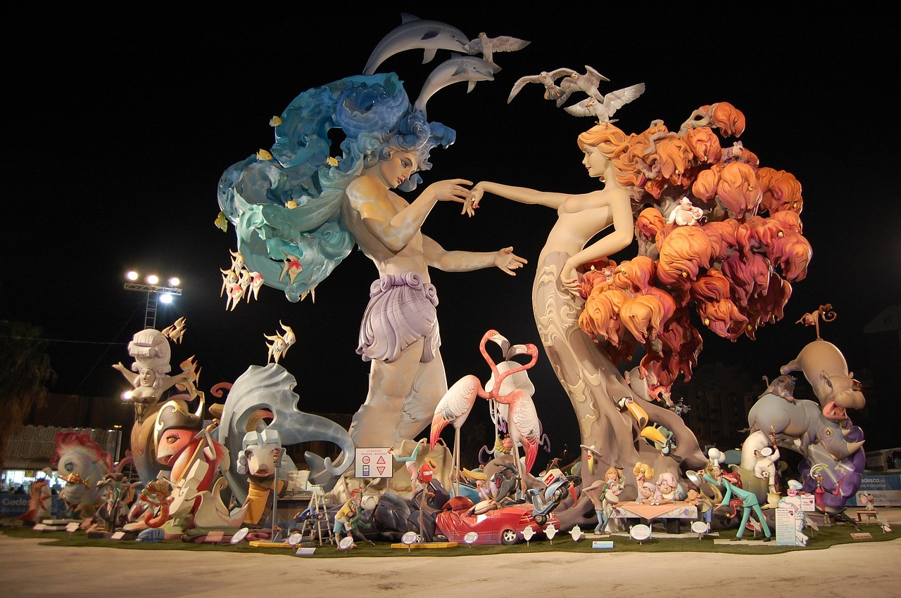
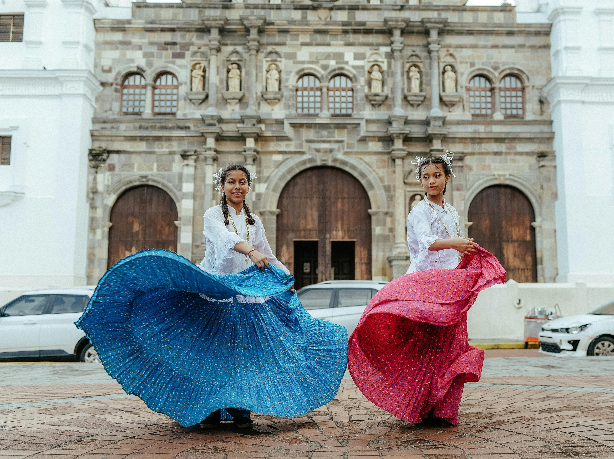

Discover Spanish Culture
Explore the vibrant traditions, festivals, and artistic heritage that make Spain's culture unique.
View Destinations
Vibrant Spanish Traditions
Spain's culture is a colorful tapestry of traditions that vary by region. From the passionate Flamenco dancing of Andalusia to the human towers (Castells) of Catalonia, each region offers unique cultural expressions.
La Tomatina
- La Tomatina, held annually in Buñol, Spain, on the last Wednesday of August, is a vibrant festival where thousands gather to engage in a massive tomato fight. Originating in 1945, this chaotic yet joyous event attracts global participants, symbolizing fun, camaraderie, and the playful spirit of Spanish culture.

San Fermín
- The San Fermín Festival in Pamplona, Spain, is best known for the Running of the Bulls, where daring participants sprint ahead of charging bulls. This week-long July celebration combines thrilling danger, lively street parties, and deep-rooted Spanish tradition.

Flamenco
- Flamenco, Spain's passionate art form, combines fiery guitar, intense vocals, and rhythmic dance to express deep emotion. Born in Andalusia, it embodies the soul of Spanish culture with its raw energy and dramatic flair.

Bullfighting
- Bullfighting, a controversial yet traditional Spanish spectacle, showcases matadors skillfully facing bulls in a dramatic display of courage and artistry. Rooted in history, it remains a polarizing symbol of Spain's cultural heritage.

Semana Santa
- Semana Santa (Holy Week) in Spain is a solemn yet spectacular religious festival featuring dramatic processions, hooded penitents, and ornate floats. This deeply rooted tradition blends devotion, art, and emotion during Easter.

Fallas
- Las Fallas, Valencia's fiery March festival, dazzles with giant satirical sculptures (ninots), explosive fireworks, and vibrant parades. The celebration culminates in La Cremà, when the sculptures are burned in a spectacular midnight blaze.

Travel Tips
